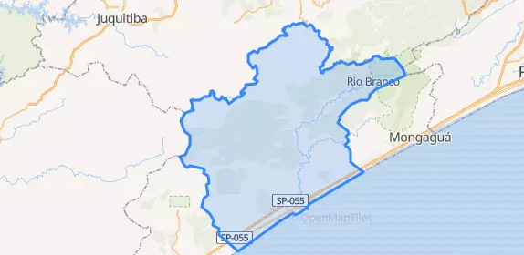
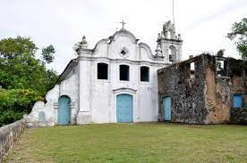

BEM-VINDOS!


Itanhaém é uma cidade que possui uma grande riqueza histórica e cultural, e todos os anos recebe a cada ano recebe inúmeros turistas devido às suas belíssimas paisagens naturais e também
diversos locais históricos. Pensando em ajudar aqueles que desejam conhecer nossa amada cidade, lançamos o projeto
Conhecendo Itanhaém. Em suma, trata-se um site que funciona como um guia turístico online.
Não queremos que você apenas venha para cá. O nosso desejo é que você se encante com a nossa cidade. Esperamos que aproveite cada momento
intensamente. Venha conhecer as nossas belas praias, a Ilha das Cabras, o Pocinho de Anchieta, a Igreja Matriz de
Sant'Anna, a Pinacoteca Municipal, o e muitos lugares. Venha conhecer os lugares por onde passaram grandes personagens
de nossa história. Venha para Itanhaém!
SOBRE A CIDADE

Itanhaém é um município localizado na Baixada Santista, Estado de São Paulo.
Estima-se que sua população seja de mais de 100.000 habitantes. Sua fundação se
deu em 22 de abril de 1532. O povoamento que deu origem à Itanhaém se deu com a
expedição liderada por Martim Afonso de Souza (o qual também seria responsável pela
fundação de São Vicente). Em 1561, Itanhaém é elevada a categoia de vila, sendo assim
chamada de Vila Conceição de Itanhaém. Posteriormente, recebe o status de município.

Um dos personagens mais marcantes da história do Brasil, Pe. José de Anchieta, marcou
presença na região. Ele foi responsável pela catequização, batismo e ensino de muitos índios.
Por causa disso, Itanhaém é conhecida como a "Terra de Anchieta".Itanhaém também possui uma
grande relação com a cultura.
A cidade também é a terra dos grandes pintores Benedito Calixto, Emídio de Souza e Alfredo Volpi. A cidade também é conhecida por suas paisagens, como a Praia do Cibratel, o Morro do Sapucaitva, o Morro do Paranambuco, a Ilha das Cabras, entre outros. Além disso, parte da cadeia montanhosa conhecida como Serra do Mar também se encontra em Itanhaém. Venha para Itanhaém!